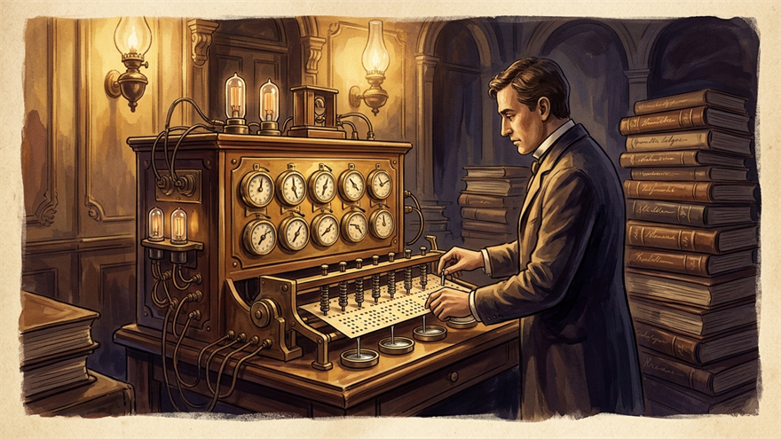

1890
Holes punched in paper cards, 7 years of work done in 1
"The machine processes 60,000 cards an hour!"
Back when 50 million people were counted by hand, one young man's punched cards relieved Census Bureau clerks of years of manual work — and his company later became IBM.

The 1880 US Census was a seemingly endless undertaking. The data of 50 million people had to be written on paper cards by hand, sorted by hand, and tallied by hand. The whole effort took seven full years.
As the 1890 census loomed, the staff at the Census Bureau felt overwhelmed:
"This time the population is bigger. The same method will take ten years — meaning we'll still be counting when the next census starts. We'll never finish."
An inventor named Herman Hollerith had an audacious idea.
"Record each person's information on a paper card — but as holes instead of letters. Punch a hole at position 25 to mean 'age 25,' a hole in the male slot, a hole in the appropriate occupation slot. Then run the cards through a machine where electricity flows through the holes and tabulates the totals automatically."
The Hollerith punch card (paper cards that record information with punched holes) system, deployed in the 1890 census, cut a seven-year job down to one.
Census Bureau supervisors were amazed:
"The machine processes 60,000 cards an hour! And it's more accurate than people, so we don't have to count by hand all night anymore!"
Hollerith built on that success to found a company, which merged with other firms to become today's IBM.
This was the first serious example of "data processed by a machine." Punch cards remained the standard input format for computers for the next 80 years; programmers were still punching holes in cards to feed work to mainframes well into the 1970s.
The spiritual ancestor of every database we use today started in a single census in 1890. The core mission of the entire computer industry — "sort and tally enormous amounts of information quickly" — first appeared here.
Punch cards represented rows and columns with hole positions.
Electrodes sensed the holes and triggered mechanical counters, automating what clerks had done by hand.
Printed manuals documented which column mapped to which survey question so every field office gathered data consistently.